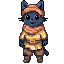

Physics puzzle · Android + browser
Finance + habit app · Android
Notebook-style FPS · Browser
Exploration + restaurant game · In development
Digital illustration · Clip Studio Paint
Digital drawing · Clip Studio Paint

Character sprite · Aseprite
Staff order management + private receipts
Traditional drawing · Paper and pen